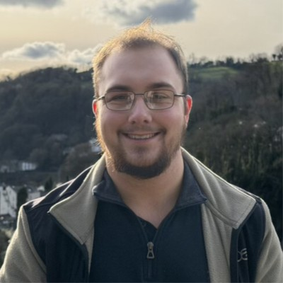

I am a doctoral researcher (PhD) at the University of Nottingham, based in the Computational Optimisation and Learning Lab (COL). My work sits at the intersection of exact optimisation, formal methods and applied logic. Outside of academia, I have worked as both a consultant and software engineer, focusing on the integration of mathematical programming into real world decision systems. In my spare time, I regularly compete in competitions, hackathons and pursue independent projects, some of which are collected in Oddments.
My research interests include: Satisfiability Modulo Theories (SMT), Exact Optimisation, Program Synthesis, Logic, Type Theory. Whilst I work with a variety of problems, I am currently exploring the application of formal methods in Single Machine Scheduling Problems.
If you would like to get in touch, please feel free to email me at firstname.lastname@nottingham.ac.uk.